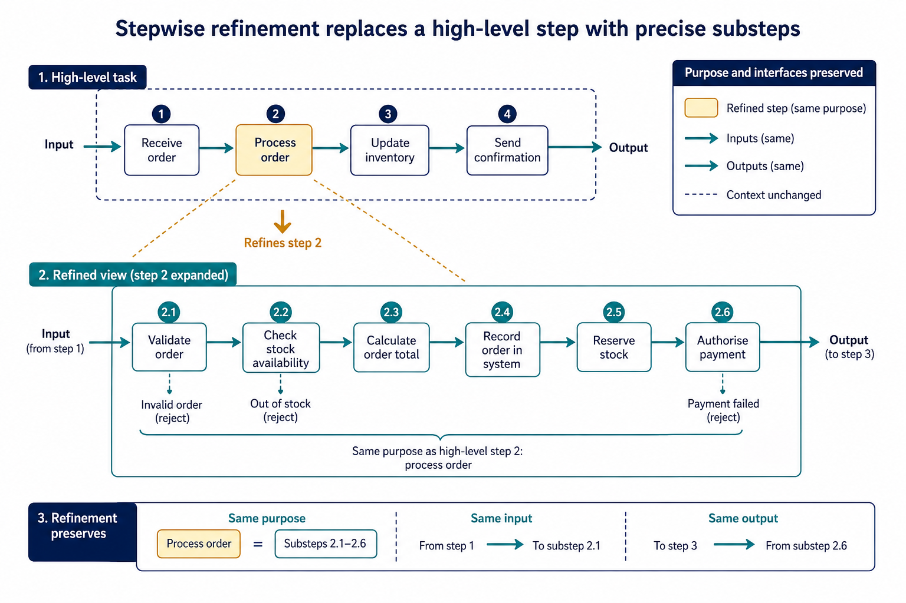

Stepwise refinement to develop an algorithm: Stepwise refinement
Visual overview
Stepwise refinement replaces a high-level step with precise substeps

Visual transcript
- A complex task starts as a small number of high-level operations.
- Each operation is refined into more precise, ordered substeps.
- Refinement preserves the purpose and interfaces of the original step.
Core explanation
Stepwise refinement starts with a high-level algorithm and repeatedly replaces each complex step with a smaller sequence of defined substeps. Refinement stops when every step is precise enough to implement and its input and output are clear.
Development review: use stepwise refinement until steps are programmable, and construct and interpret logic statements that define decisions, loop conditions or Boolean values. Core answers must not replace these requirements with tracing, Java syntax or vague planning advice.
Algorithm design review: define an algorithm as a solution expressed as a sequence of defined steps; use abstraction to retain essential details in an abstract model; use decomposition to express the problem as connected modules; and choose meaningful identifiers recorded in an identifier table.
Solution review: design with input-process-output, use sequence, selection and iteration, document the same algorithm in structured English, a flowchart or pseudocode, and convert between the specified representations without changing its control flow.